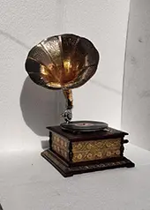
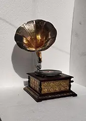

Diese alten Grammophone sind eindrucksvolle Zeugnisse früherer Musikgeschichte und handwerklicher Präzision. Mit ihren charakteristischen Trichtern, fein gearbeiteten Details und der sichtbaren Geschichte erzählen sie von Salons, Tanzabenden und dem Zauber der ersten Tonaufnahmen.
Ob als dekoratives Sammlerstück, nostalgischer Blickfang oder sogar noch spielbares Gerät: Antike Grammophone vereinen Technik, Design und Geschichte auf einzigartige Weise. Jedes Exemplar ist ein Unikat und bringt den Charme vergangener Epochen in Wohn- oder Geschäftsräume.
Bei uns ist jedes Stück ein Unikat und gibt es deswegen nur einmal. Dennoch haben wir im Moment eine Auswahl an alten Waagen bei uns im Laden, da sich die Auswahl aber ständig verändern kann, bitten wir euch, immer wieder vorbeizuschauen